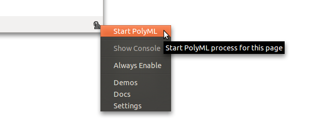

To use the PolyML Extension you'll need to install PolyML and the PolyMLext extension itself.
Test It
After you've done that, you can check whether it's working by opening up Firefox, right clicking the extension icon at the bottom right corner of the browser and clicking Start PolyML.
The label should change to Initializing.... This means that the neccessary heaps are being built for the first time. After the label changes to PolyML as in the screenshot below try entering some Standard ML code into the console (if you can't see the console click on the PolyMLext icon).

Troubleshooting
If some of the above steps did not work, please refer to the Troubleshooting section